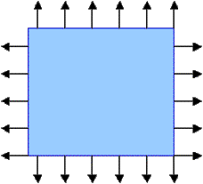
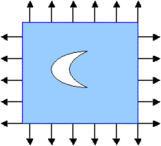

Optimal shapes of holes in an elastic plane:
PART I
A hole that the least weakens a plane
We discuss a problem from Structural optimization: Optimization of shapes of holes. The problem looks simple, but its solution yields to elegant and unexpected series of puzzles. The results and some of the arguments (but unfortunately not the methods) are easily displayable on the web.For the whole solution and complete discussion look in the paper:
A. V. Cherkaev, Y. Grabovsky , A. B. Movchan and S. K. Serkov. 1998. The cavity of the optimal shape under the shear stresses, International Journal of Solids and Structures, 35, pp. 4391--4410,the bookan earlier paper: S. B. Vigdergauz and A. V. Cherkaev 1986. A hole in a plate, optimal for its Biaxial Extension-Compression,Prikladnaya-Matematika i Mehanika, 50 (3). pp. 524--528.
Andrej Cherkaev. Variational methods for structural optimization Springer, NY, 2000 (Section 15.3),and in the earlier papers such as: Cherepanov, 1974; Banichuk, 1977; Vigdergauz, 1984-1993, Grabovsky and Kohn, 1995 where many aspects of this problem has been investigated (further references can be found in these sources). (The exact references can be found in my database)
The
problem:
Consider a plane loaded by infinitely distant uniform horizontal H and vertical V forces. Under this load, the stress is constant everywhere in the plate.
Now suppose that one drills a hole (not necessarily a circular one) in the plane. The stress increases in the proximity of the hole and the plane is weakened.
To compare the performance of the two planes with and without a hole we compare the elastic energy stored in them:The undamaged plane always stores the least energy.Indeed, the energy is equal to the product of the stress (which are fixed) and strain (which is not). The larger the energy, the larger the strain or the more compliant is the plane. The difference in energies indicates how much the plane is weakened.
Optimization problem
Now we can formulate the optimization problem:Find the shape of the hole of a given area that least weakens the loaded elastic plane.